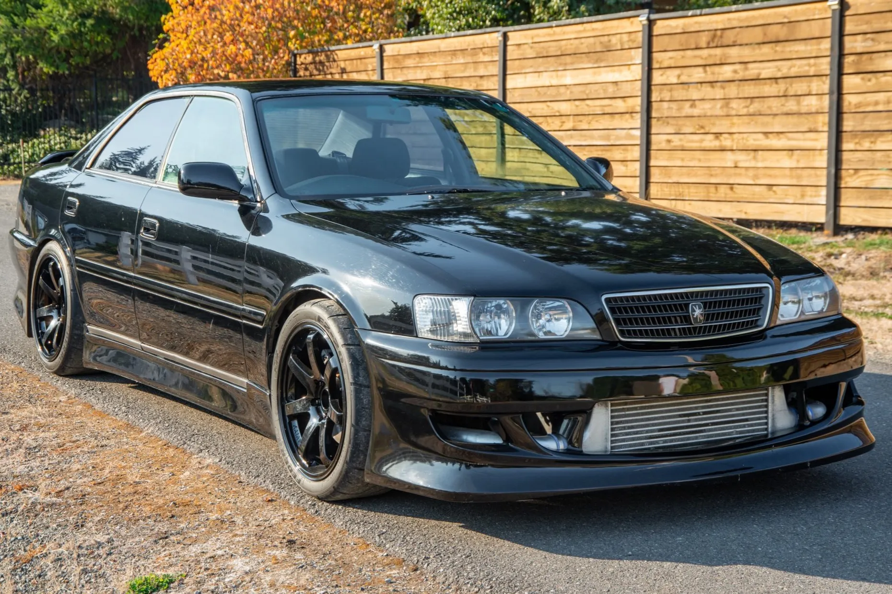
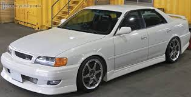
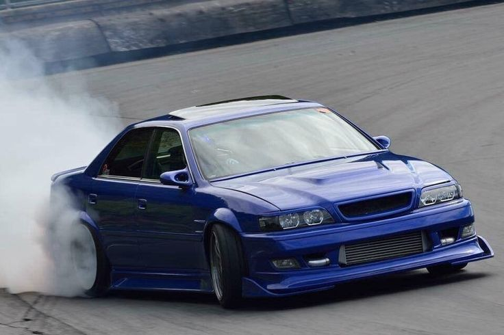
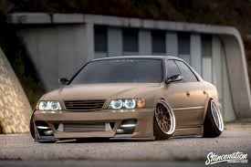
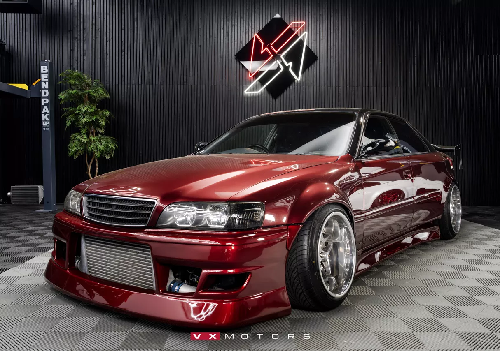
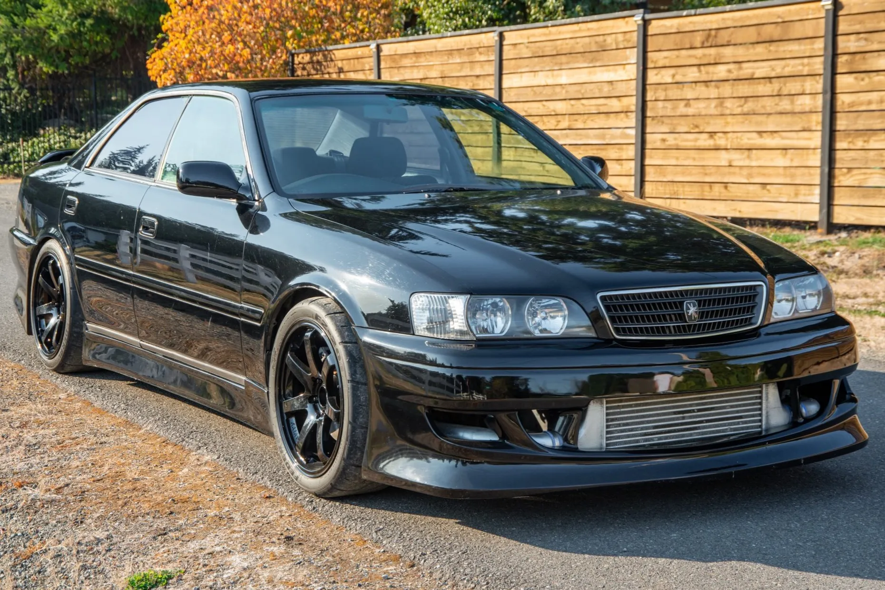
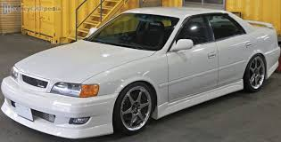
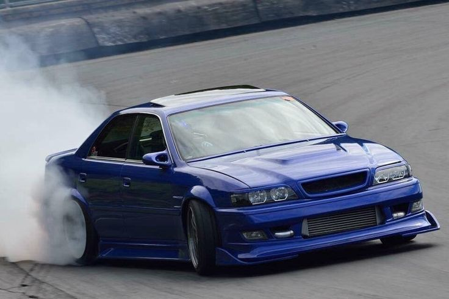
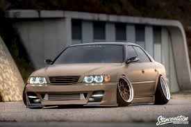
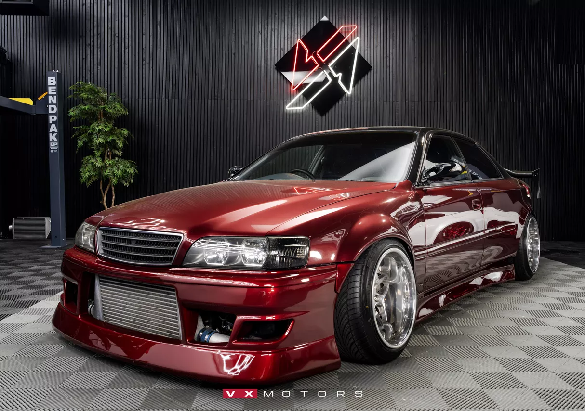

Характеристики машини
Двигун
Тип двигуна:
Рядний 6-циліндровий бензиновий, турбований
Робочий об’єм:
2,5 л (2491 см³)
Система наддуву:
- Ранні версії — два турбокомпресори (twin-turbo)
- Пізніші — одна турбіна (single turbo VVT-i)
Потужність:
≈ 280 к.с. (офіційно обмежена за японськими нормами) Фактично — більше 🔥
Крутний момент:
≈ 363 Н·м
Максимальні оберти:
до ~7000 об/хв
Toyota Chaser — опис автомобіля
Toyota Chaser — це культовий японський спортивний седан бізнес-класу, який поєднує в собі елегантний дизайн, комфорт та високі динамічні характеристики. Автомобіль створювався як частина серії Toyota Mark II / Cresta / Chaser і був орієнтований на водіїв, які цінують швидкість, керованість і статус.
Chaser має задній привід, ідеальне балансування та міцну платформу, що зробило його особливо популярним у дрифті та автоспорті. Найбільш легендарною версією вважається модифікація з двигуном 1JZ-GTE, яка забезпечує потужне прискорення, плавну роботу рядної «шістки» та характерний турбозвук.
Дизайн автомобіля стриманий, але агресивний: довгий капот, чіткі лінії кузова, низька посадка та спортивний силует. Салон поєднує комфорт бізнес-класу з елементами спортивності — глибокі сидіння, орієнтована на водія панель приладів і якісні матеріали оздоблення.
Toyota Chaser відома своєю надійністю, великим потенціалом для тюнінгу та здатністю витримувати високі навантаження. Саме завдяки цьому вона стала легендою JDM-культури та досі залишається бажаним автомобілем серед автолюбителів у всьому світі.
 








